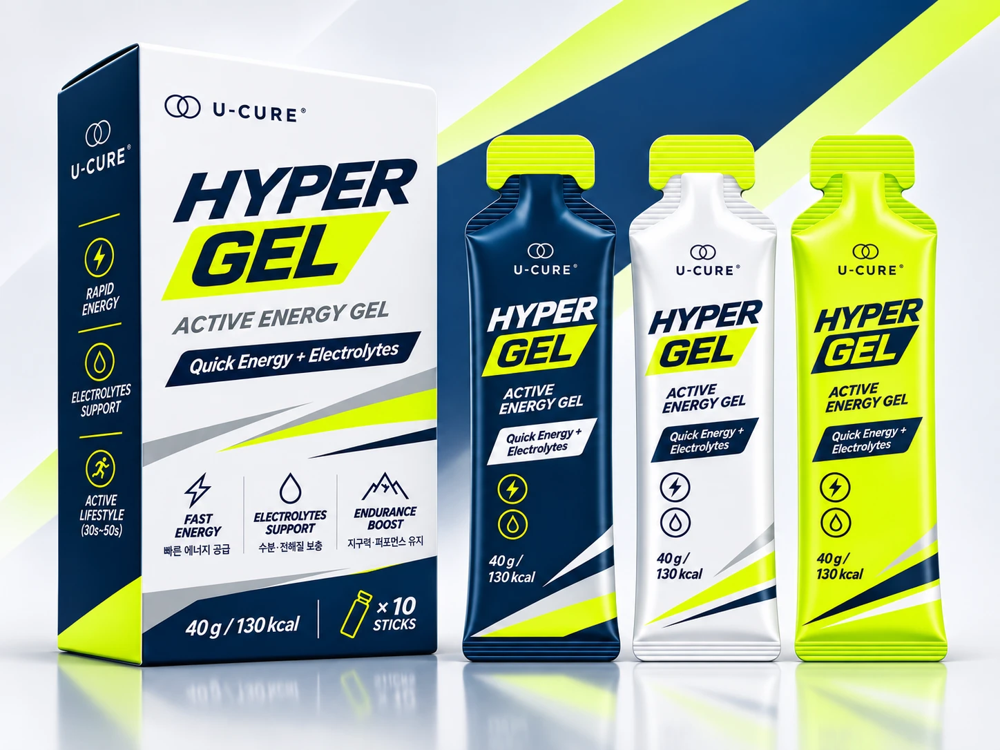
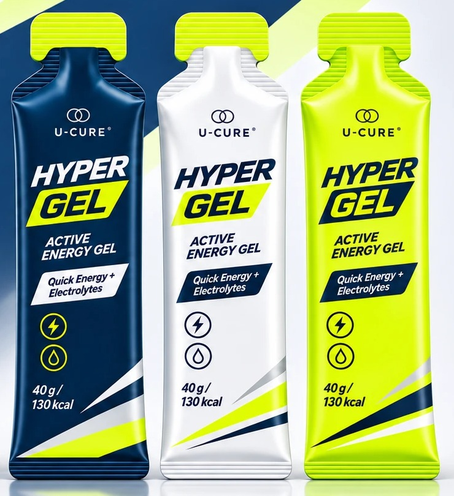
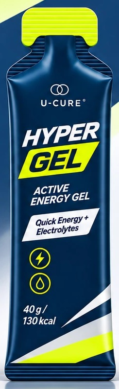
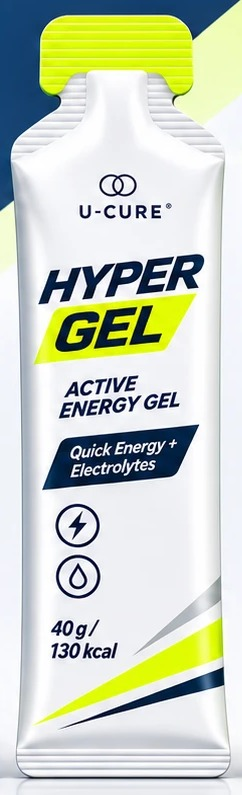
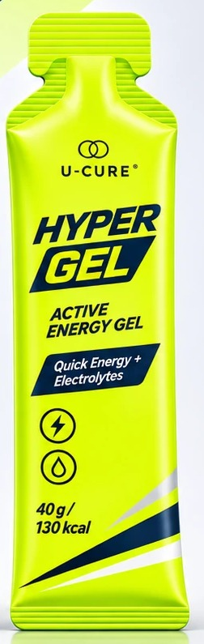
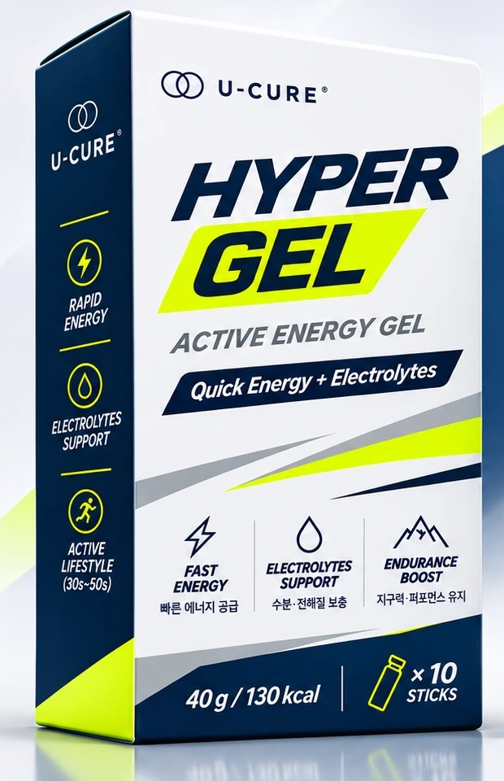

U-CURE ACTIVE ENERGY
빠른 에너지와 전해질을 한 번에.
운동하는 30~50대를 위한 에너지 젤

CHECK LIST
COMPARE
INTRODUCING
무겁게 챙길 필요 없이,
꺼내서 짜 먹으면 끝.

WHY
우리 몸은 운동할 때 몸속에 저장된 에너지를 꺼내 씁니다.
시간이 지날수록 그 저장고가 줄어들고,
땀으로 수분과 전해질도 함께 빠져나갑니다.
운동 시간에 따른 몸속 에너지 (개념도)
* 이해를 돕기 위한 개념도이며, 개인과 운동 강도에 따라 다릅니다.
그래서 필요한 건,
바닥나기 전에 채우는 습관입니다.
POINT

씹을 필요 없이 바로 넘어가는 형태라, 숨이 찬 운동 중에도 부담 없이 에너지를 보충할 수 있습니다.

땀에는 물뿐 아니라 나트륨·칼륨 같은 전해질도 함께 빠져나갑니다. 에너지와 전해질을 한 포로 챙기세요.

등산복 주머니, 골프백, 러닝 벨트 어디든. 계란 하나보다 가벼워 몇 포를 챙겨도 부담이 없습니다.
WHY U-CURE
현직 물리치료사가 기획한 브랜드, 유큐어.
보호대에 이어 운동하는 분들을 위한 에너지까지 담았습니다.
DESIGN
가방 속에서도 바로 찾을 수 있는 선명한 디자인
COLOR 01
차분하고 단단한 느낌.
어떤 운동복에도 잘 어울립니다.
COLOR 02
깔끔하고 가벼운 느낌.
골프·테니스 같은 필드 운동에.
COLOR 03
눈에 확 띄는 컬러.
배낭 속에서도 바로 꺼낼 수 있게.
WHEN TO TAKE
어렵지 않습니다. 세 가지 타이밍만 기억하세요.
출발 전 한 포로 미리 준비하세요.
공복으로 운동을 시작할 때 특히 추천합니다.
지치기 전에 먹는 것이 핵심입니다.
힘이 빠진 뒤보다 미리 챙기는 게 좋습니다.
하산 직전, 후반 9홀 시작, 결승 5km 전.
마지막 힘이 필요할 때 한 포.
HOW TO
윗부분 절취선을
가볍게 뜯어주세요
아래부터 눌러
한 번에 드세요
물과 함께 드시면
더 깔끔합니다
Q & A
RECOMMEND
정상에서 한 포, 하산 전에 한 포.
내려오는 길까지 가볍게.
후반 9홀 시작 전, 그늘집 대신
주머니 속 한 포.
멈추지 않고 한 손으로.
물 마시는 타이밍에 함께.
세트 사이 짧은 휴식 시간에
간단하게 보충.
PRODUCT

| 제품명 | U-CURE HYPER GEL (액티브 에너지 젤) |
|---|---|
| 식품의 유형 | 입력 필요 |
| 내용량 | 40g × 10포 (400g) / 1포당 130kcal |
| 원재료명 및 함량 | 입력 필요 |
| 영양성분 | 열량 130kcal · 탄수화물 OOg · 당류 OOg · 나트륨 OOmg · 칼륨 OOmg |
| 알레르기 유발물질 | 입력 필요 |
| 제조원 / 판매원 | 입력 필요 / 유큐어 |
| 소비기한 | 제품 별도 표기일까지 |
| 보관방법 | 직사광선을 피해 서늘하고 건조한 곳에 보관 |
| 소비자상담 | 입력 필요 |
U-CURE · HYPER GEL